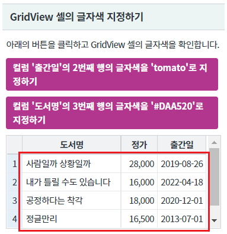
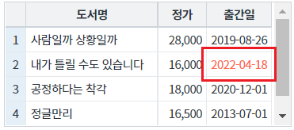
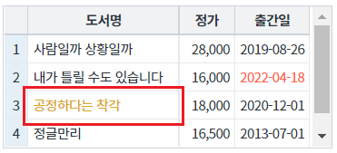

GridView의 특정 셀의 글자색을 지정하는 예제입니다. 이 기능은 함수 setCellColor를 호출하여 사용할 수 있습니다.
셀의 글자색 지정하기
영역 [GridView 셀의 글자색 지정하기]의 GridView를 확인합니다.
[브라우저(Chrome) 실행 예시]

버튼 컬럼 '출간일'의 2번째 행의 글자색을 'tomato'로 지정하기을 클릭합니다.
컬럼 '출간일'의 2번째 행의 셀의 글자색이 'tomato'로 변경됩니다.
[브라우저(Chrome) 실행 예시]

버튼 컬럼 '도서명'의 3번째 행의 글자색을 '#DAA520'로 지정하기을 클릭합니다.
컬럼 '도서명'의 3번째 행의 글자색이 '#DAA520'로 변경됩니다.
[브라우저(Chrome) 실행 예시]

GridView의 함수 setCellColor을 사용합니다.
[소스 코드 예시]
//예제 파일의 스크립트 "scwin.btn_ex1_onclick" 또는 "scwin.btn_ex2_onclick"를 참고하세요. //GridView 'grd_exam1'의 컬럼 '출간일'의 2번째 행의 글자색을 'tomato'로 지정하기 grd_exam1.setCellColor(1, "published_date", "tomato"); //GridView 'grd_exam1'의 컬럼 '도서명'의 3번째 행의 글자색을 '#DAA520'로 지정하기 grd_exam1.setCellColor(2, "book_name", "#DAA520");
setCellColor( rowIndex , colIndex , color )
[웹스퀘어5 SP5 개발 가이드] GridView
링크 : https://docs1.inswave.com/sp5_user_guide/bc10c1b82c9a2a0b#e1c4658baf7e726f
[웹스퀘어5 SP5 개발 가이드] GridView 셀
링크 : https://docs1.inswave.com/sp5_user_guide/86bdcf48029b958b#968539217b7575c2